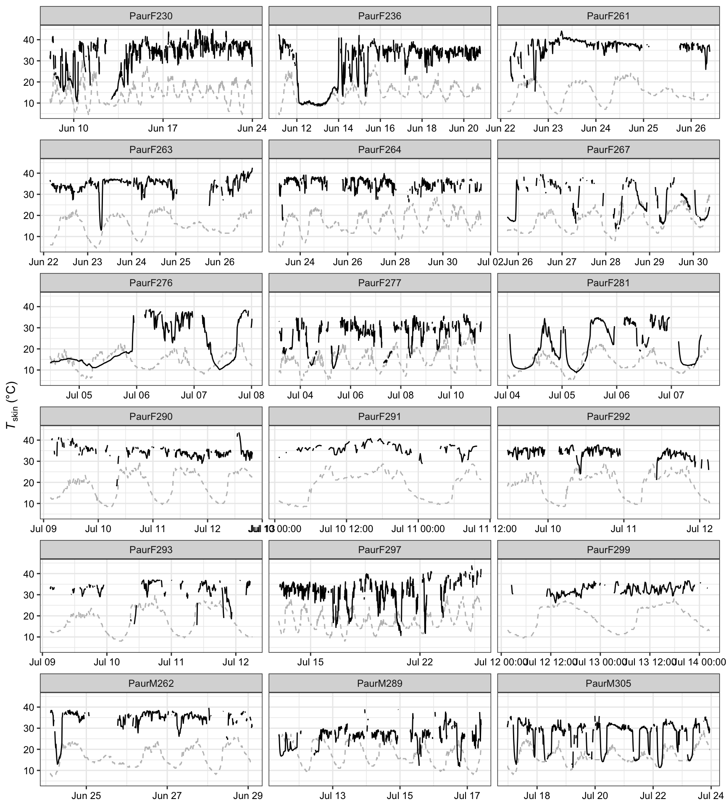
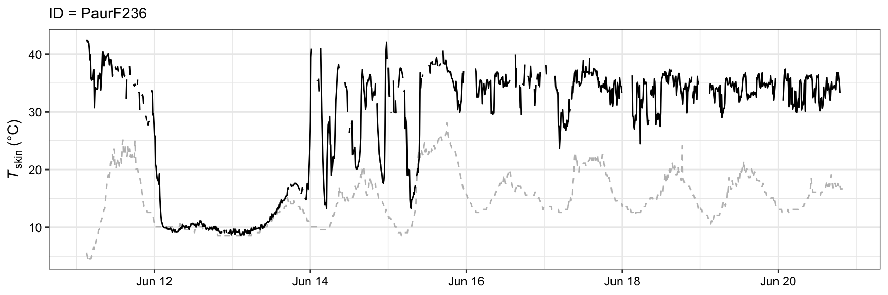
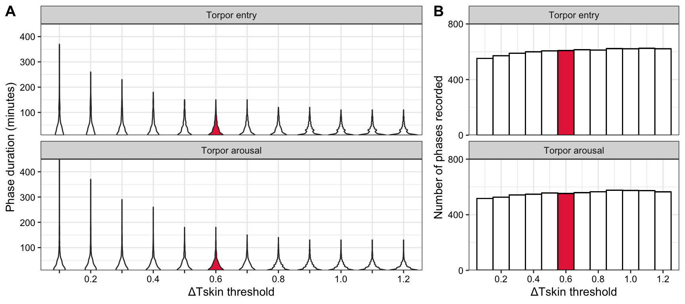
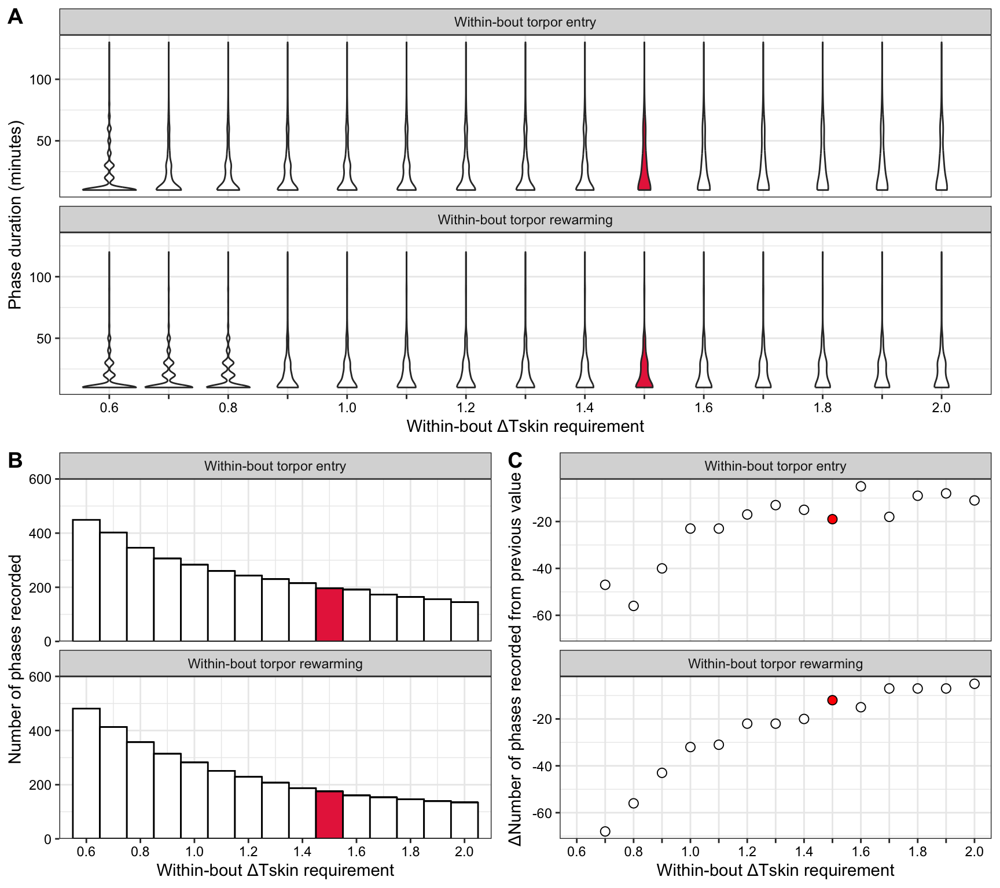
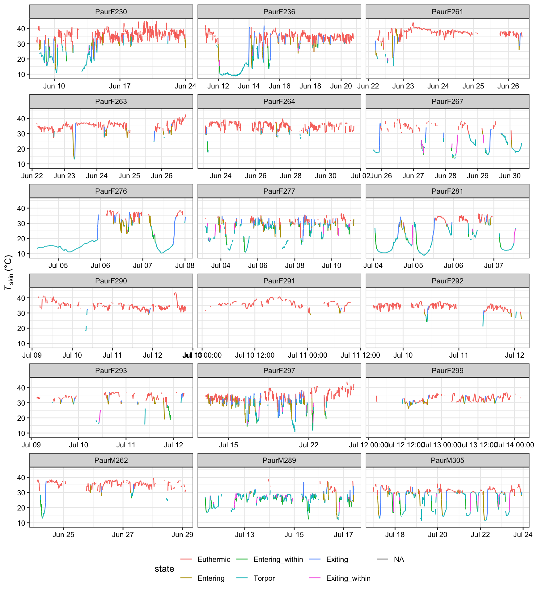
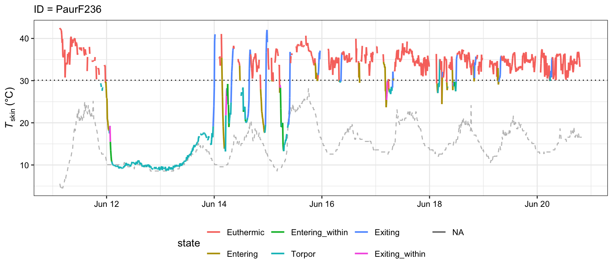

#install.packages("colorspace")
# Load libraries
library(tidyverse)
library(data.table) # some functions use this package
library(lubridate) # working with date and time variables
library(cowplot)
library(colorspace)
# load data
# If one species
tsk_plecotus_raw <- read.csv("https://raw.githubusercontent.com/nicholaswunz/thermal_ecology_R/refs/heads/main/data/tskin_plecotus.csv")
# If multiple species
tsk_myotis_raw <- read.csv("https://raw.githubusercontent.com/nicholaswunz/thermal_ecology_R/refs/heads/main/data/tskin_myotis.csv")
tsk_eptesicus_raw <- read.csv("https://raw.githubusercontent.com/nicholaswunz/thermal_ecology_R/refs/heads/main/data/tskin_eptesicus.csv")
# Merge all three species
tsk_all_raw <- bind_rows(tsk_plecotus_raw, tsk_myotis_raw, tsk_eptesicus_raw)Torpor/Arousal
Authors: Nicholas Wu
Quantifying torpor and arousal patterns from raw temperature traces.
We will base this tutorial from Fjelldal et al. (2023) supplementary code
Setting up
Load R packages and set up directory and load your raw data. At minimum, your dataset needs to contain the following two columns:
- A unique ID column of each animal (even if the dataset contains data from only one individual)
- A continous skin- or body-temperature column
The ID-column should be named “ID” and the temperature column “Tb”. Tb-data for different individuals should be kept in the same column as opposed to separate columns for each individual. Missing Tb-datapoints are allowed.
Note
Time and date columns are not needed (but can be kept in the dataset) as the codes assume that within the ID-group each data point following the next have equal distance for all datapoints (for the dataset used when creating this code the Tskin was recorded every 10 minutes).
If this is not true for the dataset, e.g. if an individual was measured on two separate days without continuity, the ID-column should be unique for each individual AND period. This is due to the lag-functions, which calculates the Tb-differences from previous points and need the specification of staying within the group to not mix values between individuals or periods.
Missing data periods can also be filled in with NA values in the Tb column so that each individual keeps a consecutive data period from the first observation until the last (there were cases of several days of missing data for some individuals in the dataset for which this code was built).
In this tutorial, we will be playing with skin temperature data from temperature-sensitive transmitters across three species of bats (Plecotus auritus n = 18; Myotis brandtii n = 10, Eptesicus nilssonii n = 12) studied in Norway. You can download the example data from the data folder of the Github repository.
Visualise raw temperature traces for 18 individual Plecotus auritus from the year 2019 only.
tsk_plecotus_raw %>%
filter(year == 2019) %>%
mutate(date_time = lubridate::dmy_hm(date_time)) %>%
ggplot(aes(x = date_time, y = Tb, group = ID)) +
geom_line(aes(y = Ta), colour = "grey", linetype = "dashed") +
geom_line() +
labs(x = NULL, y = expression(italic("T")["skin"]~"(°C)")) +
theme_bw() +
theme(axis.text.y = element_text(colour = "black"),
axis.text.x = element_text(colour = "black")) +
facet_wrap(~ ID, ncol = 3, scales = "free_x")
Here is a close up on one of the individuals (PaurF236) with the inclusion of air temperature (Ta) represented as a dashed grey line.
tsk_plecotus_raw %>%
filter(year == 2019 & ID =="PaurF236") %>%
mutate(date_time = lubridate::dmy_hm(date_time)) %>%
ggplot(aes(x = date_time, y = Tb)) +
geom_line(aes(y = Ta), colour = "grey", linetype = "dashed") +
geom_line() +
labs(subtitle = "ID = PaurF236",
x = NULL,
y = expression(italic("T")["skin"]~"(°C)")) +
theme_bw() +
theme(axis.text.y = element_text(colour = "black"),
axis.text.x = element_text(colour = "black")) 
The main function of this tutorial called torpor_phase_function() can be found below. Click the arrow below to expand and view the full code.
Click to expand the code
torpor_phase_function <- function(sensitivity, within_bout_sensitivity) {
df <- data_testing %>%
group_by(ID) %>%
mutate(Tb_diff = (Tb - lag(Tb, n = 1, default = NA)),
Tb_diff_2 = (Tb - lag(Tb, n = 2, default = NA)))
df$below_threshold <- ifelse(is.na(df$below_threshold),"No data",df$below_threshold)
data.table::setDT(df)
torpor_dataset <- as.data.frame(df[, count_length := with(rle(below_threshold), rep(lengths,lengths))
][, num := data.table::rleid(below_threshold)])
torpor_dataset$Torpor <- ifelse(torpor_dataset$below_threshold==TRUE, "Torpor", "Not torpor")
my_vec <- numeric()
for(i in 1:(nrow(torpor_dataset))) {
if(i == 1) {
my_vec[i] <- "No"
} else if (i == nrow(torpor_dataset)) {
my_vec[i] <- "No"
} else {
if(torpor_dataset[c(i),c("Torpor")]=="Not torpor" & torpor_dataset[c(i-1),c("Torpor")]=="Torpor" & !is.na(torpor_dataset[c(i),c("Tb_diff")]) & torpor_dataset[c(i),c("Tb_diff")] > sensitivity) {
my_vec[i] <- "Exiting"
} else if (torpor_dataset[c(i),c("Torpor")]=="Not torpor" & torpor_dataset[c(i-1),c("Torpor")]=="Torpor" & !is.na(torpor_dataset[c(i),c("Tb_diff")]) & torpor_dataset[c(i),c("Tb_diff")] <= sensitivity
& !is.na(torpor_dataset[c(i+1),c("Tb_diff")]) & torpor_dataset[c(i+1),c("Tb_diff")] > sensitivity) {
my_vec[i+1] <- "Exiting"
} else if (torpor_dataset[c(i),c("Torpor")]=="Not torpor" & torpor_dataset[c(i-1),c("Torpor")]=="Torpor" & !is.na(torpor_dataset[c(i),c("Tb_diff")]) & torpor_dataset[c(i),c("Tb_diff")] <= sensitivity
& !is.na(torpor_dataset[c(i-1),c("Tb_diff")]) & torpor_dataset[c(i-1),c("Tb_diff")] > sensitivity) {
my_vec[i-1] <- "Exiting"
} else if (torpor_dataset[c(i),c("Torpor")]=="Torpor" & torpor_dataset[c(i-1),c("Torpor")]=="Not torpor" & !is.na(torpor_dataset[c(i),c("Tb_diff")]) & torpor_dataset[c(i),c("Tb_diff")] < -sensitivity) {
my_vec[i] <- "Entering"
} else if (torpor_dataset[c(i),c("Torpor")]=="Torpor" & torpor_dataset[c(i-1),c("Torpor")]=="Not torpor" & !is.na(torpor_dataset[c(i),c("Tb_diff")]) & torpor_dataset[c(i),c("Tb_diff")] >= -sensitivity
& !is.na(torpor_dataset[c(i-1),c("Tb_diff")]) & torpor_dataset[c(i-1),c("Tb_diff")] < -sensitivity) {
my_vec[i-1] <- "Entering"
} else if (torpor_dataset[c(i),c("Torpor")]=="Torpor" & torpor_dataset[c(i-1),c("Torpor")]=="Not torpor" & !is.na(torpor_dataset[c(i),c("Tb_diff")]) & torpor_dataset[c(i),c("Tb_diff")] >= -sensitivity
& !is.na(torpor_dataset[c(i+1),c("Tb_diff")]) & torpor_dataset[c(i+1),c("Tb_diff")] < -sensitivity) {
my_vec[i+1] <- "Entering"
}
}
}
my_vec <- ifelse(is.na(my_vec),"No",my_vec)
torpor_dataset$phase_start <- my_vec
Entering_rows = which(torpor_dataset$phase_start == "Entering")
Exiting_rows = which(torpor_dataset$phase_start == "Exiting")
my_vec_entering_1 <- numeric()
my_vec_entering_1_notfull <- numeric()
for(i in Entering_rows) {
while(i < nrow(torpor_dataset)) {
my_vec_entering_1[i] <- "Entering"
# increment number by 1
i = i + 1
if(!is.na(torpor_dataset[i,c("Tb_diff")]) & is.na(torpor_dataset[i+1,c("Tb_diff")])) {
if (torpor_dataset[i,c("Tb_diff")] > -sensitivity) {
break
} else {
my_vec_entering_1[i] <- ifelse(torpor_dataset[i,c("Tb_diff")] <= -sensitivity, "Entering",NA)
my_vec_entering_1_notfull[i] <- "Not complete"
}
} else {
# break if following conditions are met
if ((torpor_dataset[i,c("Tb_diff")] > -sensitivity & torpor_dataset[i+1,c("Tb_diff")] > -sensitivity) |
(torpor_dataset[i,c("Tb_diff")] > -sensitivity & torpor_dataset[i+1,c("Tb_diff")] <= -sensitivity & torpor_dataset[i+1,c("Tb_diff_2")] >= 0) |
is.na(torpor_dataset[i,c("Tb_diff")]) ) {
break
}
}
}
}
my_vec_entering_2 <- numeric()
my_vec_entering_2_notfull <- numeric()
for(i in Entering_rows) {
while(i <= nrow(torpor_dataset)) {
my_vec_entering_2[i] <- "Entering"
i = i - 1
if(!is.na(torpor_dataset[i,c("Tb_diff")]) & is.na(torpor_dataset[i-1,c("Tb_diff")])) {
if (torpor_dataset[i,c("Tb_diff")] > -sensitivity) {
break
} else {
my_vec_entering_2[i] <- ifelse(torpor_dataset[i,c("Tb_diff")] <= -sensitivity, "Entering",NA)
my_vec_entering_2_notfull[i] <- "Not complete"
}
} else {
# break if following conditions are met
if ((torpor_dataset[i,c("Tb_diff")] > -sensitivity & torpor_dataset[i-1,c("Tb_diff")] > -sensitivity) |
(torpor_dataset[i,c("Tb_diff")] > -sensitivity & torpor_dataset[i-1,c("Tb_diff")] <= -sensitivity & torpor_dataset[i,c("Tb_diff_2")] >= 0) |
is.na(torpor_dataset[i,c("Tb_diff")]) |
(i == 1)) {
break
}
}
}
}
my_vec_exiting_1 <- numeric()
my_vec_exiting_1_notfull <- numeric()
for(i in Exiting_rows) {
while(i < nrow(torpor_dataset)) {
my_vec_exiting_1[i] <- "Exiting"
i = i + 1
if(!is.na(torpor_dataset[i,c("Tb_diff")]) & is.na(torpor_dataset[i+1,c("Tb_diff")])) {
if (torpor_dataset[i,c("Tb_diff")] < sensitivity) {
break
} else {
my_vec_exiting_1[i] <- ifelse(torpor_dataset[i,c("Tb_diff")] >= sensitivity, "Exiting",NA)
my_vec_exiting_1_notfull[i] <- "Not complete"
}
} else {
# break if following conditions are met
if ((torpor_dataset[i,c("Tb_diff")] < sensitivity & torpor_dataset[i+1,c("Tb_diff")] < sensitivity) |
(torpor_dataset[i,c("Tb_diff")] < sensitivity & torpor_dataset[i+1,c("Tb_diff")] >= sensitivity & torpor_dataset[i+1,c("Tb_diff_2")] <= 0) |
is.na(torpor_dataset[i,c("Tb_diff")])) {
break
}
}
}
}
my_vec_exiting_2 <- numeric()
my_vec_exiting_2_notfull <- numeric()
for(i in Exiting_rows) {
while(i <= nrow(torpor_dataset)) {
my_vec_exiting_2[i] <- "Exiting"
i = i - 1
if(!is.na(torpor_dataset[i,c("Tb_diff")]) & is.na(torpor_dataset[i-1,c("Tb_diff")])) {
if (torpor_dataset[i,c("Tb_diff")] < sensitivity) {
break
} else {
my_vec_exiting_2[i] <- ifelse(torpor_dataset[i,c("Tb_diff")] >= sensitivity, "Exiting",NA)
my_vec_exiting_2_notfull[i] <- "Not complete"
}
} else {
# break if following conditions are met
if ((torpor_dataset[i,c("Tb_diff")] < sensitivity & torpor_dataset[i-1,c("Tb_diff")] < sensitivity) |
(torpor_dataset[i,c("Tb_diff")] < sensitivity & torpor_dataset[i-1,c("Tb_diff")] >= sensitivity & torpor_dataset[i,c("Tb_diff_2")] <= 0) |
is.na(torpor_dataset[i,c("Tb_diff")]) |
(i == 1)) {
break
}
}
}
}
my_vec_entering_1 <- c(my_vec_entering_1, rep(NA, nrow(torpor_dataset)-length(my_vec_entering_1)))
my_vec_entering_2 <- c(my_vec_entering_2, rep(NA, nrow(torpor_dataset)-length(my_vec_entering_2)))
my_vec_exiting_1 <- c(my_vec_exiting_1, rep(NA, nrow(torpor_dataset)-length(my_vec_exiting_1)))
my_vec_exiting_2 <- c(my_vec_exiting_2, rep(NA, nrow(torpor_dataset)-length(my_vec_exiting_2)))
my_vec_entering_1_notfull <- c(my_vec_entering_1_notfull, rep(NA, nrow(torpor_dataset)-length(my_vec_entering_1_notfull)))
my_vec_entering_2_notfull <- c(my_vec_entering_2_notfull, rep(NA, nrow(torpor_dataset)-length(my_vec_entering_2_notfull)))
my_vec_exiting_1_notfull <- c(my_vec_exiting_1_notfull, rep(NA, nrow(torpor_dataset)-length(my_vec_exiting_1_notfull)))
my_vec_exiting_2_notfull <- c(my_vec_exiting_2_notfull, rep(NA, nrow(torpor_dataset)-length(my_vec_exiting_2_notfull)))
defaultW <- getOption("warn")
options(warn = -1)
phase_all1 <- ifelse(is.na(my_vec_entering_1) & !is.na(my_vec_entering_2),my_vec_entering_2,my_vec_entering_1)
phase_all1 <- ifelse(is.na(phase_all1) & !is.na(my_vec_exiting_1),my_vec_exiting_1,phase_all1)
phase_all1 <- ifelse(is.na(phase_all1) & !is.na(my_vec_exiting_2),my_vec_exiting_2,phase_all1)
Not_full_phases <- ifelse(is.na(my_vec_entering_1_notfull) & !is.na(my_vec_entering_2_notfull),my_vec_entering_2_notfull,my_vec_entering_1_notfull)
Not_full_phases <- ifelse(is.na(Not_full_phases) & !is.na(my_vec_exiting_1_notfull),my_vec_exiting_1_notfull,Not_full_phases)
Not_full_phases <- ifelse(is.na(Not_full_phases) & !is.na(my_vec_exiting_2_notfull),my_vec_exiting_2_notfull,Not_full_phases)
options(warn = defaultW)
torpor_dataset$phase_all1 <- phase_all1
torpor_dataset$Not_full_phases <- Not_full_phases
# Including the within torpor bout entries and rewarmings #
within_bout_entering_rows = which(is.na(torpor_dataset$phase_all1) & torpor_dataset$Torpor == "Torpor" & torpor_dataset$Tb_diff < -within_bout_sensitivity)
within_bout_exiting_rows = which(is.na(torpor_dataset$phase_all1) & torpor_dataset$Torpor == "Torpor" & torpor_dataset$Tb_diff > within_bout_sensitivity)
my_vec_entering_within_1 <- numeric()
my_vec_entering_within_1_notfull <- numeric()
for(i in within_bout_entering_rows) {
while(i < nrow(torpor_dataset)) {
my_vec_entering_within_1[i] <- "Entering_within"
i = i + 1
if(!is.na(torpor_dataset[i,c("Tb_diff")]) & is.na(torpor_dataset[i+1,c("Tb_diff")])) {
if (torpor_dataset[i,c("Tb_diff")] > -sensitivity) {
break
} else {
my_vec_entering_within_1[i] <- ifelse(torpor_dataset[i,c("Tb_diff")] <= -sensitivity, "Entering_within",NA)
my_vec_entering_within_1_notfull[i] <- "Not complete"
}
} else {
# break if following conditions are met
if ((torpor_dataset[i,c("Tb_diff")] > -sensitivity & torpor_dataset[i+1,c("Tb_diff")] > -sensitivity) |
(torpor_dataset[i,c("Tb_diff")] > -sensitivity & torpor_dataset[i+1,c("Tb_diff")] <= -sensitivity & torpor_dataset[i+1,c("Tb_diff_2")] >= 0) |
is.na(torpor_dataset[i,c("Tb_diff")]) ) {
break
}
}
}
}
my_vec_entering_within_2 <- numeric()
my_vec_entering_within_2_notfull <- numeric()
phase2 <- ifelse(is.na(torpor_dataset$phase_all1),0,torpor_dataset$phase_all1)
for(i in within_bout_entering_rows) {
while(i <= nrow(torpor_dataset)) {
my_vec_entering_within_2[i] <- "Entering_within"
i = i - 1
if(!is.na(torpor_dataset[i,c("Tb_diff")]) & is.na(torpor_dataset[i-1,c("Tb_diff")])) {
if (torpor_dataset[i,c("Tb_diff")] > -sensitivity) {
break
} else {
my_vec_entering_within_2[i] <- ifelse(torpor_dataset[i,c("Tb_diff")] <= -sensitivity, "Entering_within",NA)
my_vec_entering_within_2_notfull[i] <- "Not complete"
}
} else {
# break if following conditions are met
if ((torpor_dataset[i,c("Tb_diff")] > -sensitivity & torpor_dataset[i-1,c("Tb_diff")] > -sensitivity) |
(torpor_dataset[i,c("Tb_diff")] > -sensitivity & torpor_dataset[i-1,c("Tb_diff")] <= -sensitivity & torpor_dataset[i,c("Tb_diff_2")] >= 0) |
(torpor_dataset[i,c("Tb_diff")] > -sensitivity & phase2[i-1]=="Entering") |
is.na(torpor_dataset[i,c("Tb_diff")]) |
(i == 1)) {
break
}
}
}
}
my_vec_exiting_within_1 <- numeric()
my_vec_exiting_within_1_notfull <- numeric()
for(i in within_bout_exiting_rows) {
while(i < nrow(torpor_dataset)) {
my_vec_exiting_within_1[i] <- "Exiting_within"
i = i + 1
if(!is.na(torpor_dataset[i,c("Tb_diff")]) & is.na(torpor_dataset[i+1,c("Tb_diff")])) {
if (torpor_dataset[i,c("Tb_diff")] < sensitivity) {
break
} else {
my_vec_exiting_within_1[i] <- ifelse(torpor_dataset[i,c("Tb_diff")] >= sensitivity, "Exiting_within",NA)
my_vec_exiting_within_1_notfull[i] <- "Not complete"
}
} else {
# break if following conditions are met
if ((torpor_dataset[i,c("Tb_diff")] < sensitivity & torpor_dataset[i+1,c("Tb_diff")] < sensitivity) |
(torpor_dataset[i,c("Tb_diff")] < sensitivity & torpor_dataset[i+1,c("Tb_diff")] >= sensitivity & torpor_dataset[i+1,c("Tb_diff_2")] <= 0) |
is.na(torpor_dataset[i,c("Tb_diff")])|
(torpor_dataset[i,c("Tb_diff")] < sensitivity & phase2[i+1]=="Exiting") |
is.na(torpor_dataset[i+1,c("Tb_diff")])) {
break
}
}
}
}
my_vec_exiting_within_2 <- numeric()
my_vec_exiting_within_2_notfull <- numeric()
for(i in within_bout_exiting_rows) {
while(i <= nrow(torpor_dataset)) {
my_vec_exiting_within_2[i] <- "Exiting_within"
i = i - 1
if(!is.na(torpor_dataset[i,c("Tb_diff")]) & is.na(torpor_dataset[i-1,c("Tb_diff")])) {
if (torpor_dataset[i,c("Tb_diff")] < sensitivity) {
break
} else {
my_vec_exiting_within_2[i] <- ifelse(torpor_dataset[i,c("Tb_diff")] >= sensitivity, "Exiting_within",NA)
my_vec_exiting_within_2_notfull[i] <- "Not complete"
}
} else {
# break if following conditions are met
if ((torpor_dataset[i,c("Tb_diff")] < sensitivity & torpor_dataset[i-1,c("Tb_diff")] < sensitivity) |
(torpor_dataset[i,c("Tb_diff")] < sensitivity & torpor_dataset[i-1,c("Tb_diff")] >= sensitivity & torpor_dataset[i,c("Tb_diff_2")] <= 0) |
is.na(torpor_dataset[i,c("Tb_diff")])|
is.na(torpor_dataset[i-1,c("Tb_diff")]) |
(i == 1)) {
break
}
}
}
}
my_vec_entering_within_1 <- c(my_vec_entering_within_1, rep(NA, nrow(torpor_dataset)-length(my_vec_entering_within_1)))
my_vec_entering_within_2 <- c(my_vec_entering_within_2, rep(NA, nrow(torpor_dataset)-length(my_vec_entering_within_2)))
my_vec_exiting_within_1 <- c(my_vec_exiting_within_1, rep(NA, nrow(torpor_dataset)-length(my_vec_exiting_within_1)))
my_vec_exiting_within_2 <- c(my_vec_exiting_within_2, rep(NA, nrow(torpor_dataset)-length(my_vec_exiting_within_2)))
my_vec_entering_within_1_notfull <- c(my_vec_entering_within_1_notfull, rep(NA, nrow(torpor_dataset)-length(my_vec_entering_within_1_notfull)))
my_vec_entering_within_2_notfull <- c(my_vec_entering_within_2_notfull, rep(NA, nrow(torpor_dataset)-length(my_vec_entering_within_2_notfull)))
my_vec_exiting_within_1_notfull <- c(my_vec_exiting_within_1_notfull, rep(NA, nrow(torpor_dataset)-length(my_vec_exiting_within_1_notfull)))
my_vec_exiting_within_2_notfull <- c(my_vec_exiting_within_2_notfull, rep(NA, nrow(torpor_dataset)-length(my_vec_exiting_within_2_notfull)))
phase_all <- ifelse(is.na(my_vec_entering_1) & !is.na(my_vec_entering_2),my_vec_entering_2,my_vec_entering_1)
phase_all <- ifelse(is.na(phase_all) & !is.na(my_vec_exiting_1),my_vec_exiting_1,phase_all)
phase_all <- ifelse(is.na(phase_all) & !is.na(my_vec_exiting_2),my_vec_exiting_2,phase_all)
phase_all <- ifelse(is.na(phase_all) & !is.na(my_vec_entering_within_1),my_vec_entering_within_1,phase_all)
phase_all <- ifelse(is.na(phase_all) & !is.na(my_vec_entering_within_2),my_vec_entering_within_2,phase_all)
phase_all <- ifelse(is.na(phase_all) & !is.na(my_vec_exiting_within_1),my_vec_exiting_within_1,phase_all)
phase_all <- ifelse(is.na(phase_all) & !is.na(my_vec_exiting_within_2),my_vec_exiting_within_2,phase_all)
Not_full_phases2 <- ifelse(is.na(my_vec_entering_1_notfull) & !is.na(my_vec_entering_2_notfull),my_vec_entering_2_notfull,my_vec_entering_1_notfull)
Not_full_phases2 <- ifelse(is.na(Not_full_phases2) & !is.na(my_vec_exiting_1_notfull),my_vec_exiting_1_notfull,Not_full_phases2)
Not_full_phases2 <- ifelse(is.na(Not_full_phases2) & !is.na(my_vec_exiting_2_notfull),my_vec_exiting_2_notfull,Not_full_phases2)
Not_full_phases2 <- ifelse(is.na(Not_full_phases2) & !is.na(my_vec_entering_within_1_notfull),my_vec_entering_within_1_notfull,Not_full_phases2)
Not_full_phases2 <- ifelse(is.na(Not_full_phases2) & !is.na(my_vec_entering_within_2_notfull),my_vec_entering_within_2_notfull,Not_full_phases2)
Not_full_phases2 <- ifelse(is.na(Not_full_phases2) & !is.na(my_vec_exiting_within_1_notfull),my_vec_exiting_within_1_notfull,Not_full_phases2)
Not_full_phases2 <- ifelse(is.na(Not_full_phases2) & !is.na(my_vec_exiting_within_2_notfull),my_vec_exiting_within_2_notfull,Not_full_phases2)
torpor_dataset$phase_all <- phase_all
torpor_dataset$Not_full_phases <- ifelse(is.na(torpor_dataset$Not_full_phases) & !is.na(Not_full_phases2),Not_full_phases2,torpor_dataset$Not_full_phases)
# Label the different phases as "Complete", "Mixed", "Within bout" or "Not complete" #
data.table::setDT(torpor_dataset)
torpor_dataset <- as.data.frame(torpor_dataset[, phase_ID := data.table::rleid(phase_all)])
torpor_dataset <- torpor_dataset %>%
group_by(phase_ID) %>%
mutate(phase_type = ifelse(phase_all=="Exiting" | phase_all=="Entering",
"Complete",NA)) %>%
mutate(phase_type = ifelse((phase_all=="Exiting" & any(Tb_diff <0)) | (phase_all=="Entering" & any(Tb_diff >0)),
"Mixed",phase_type)) %>%
mutate(phase_type = ifelse(phase_all=="Exiting_within" | phase_all=="Entering_within",
"Within_bout",phase_type)) %>%
mutate(phase_type = ifelse(any(!is.na(Not_full_phases)),
"Not complete",phase_type))
my_vec2 <- numeric()
for(i in 1:(nrow(torpor_dataset))) {
if(i == 1) {
my_vec2[i] <- NA
} else if (i == nrow(torpor_dataset)) {
my_vec2[i] <- NA
} else {
if((!is.na(torpor_dataset[c(i),c("phase_all")]) & torpor_dataset[c(i),c("phase_type")]!="Not complete" & is.na(torpor_dataset[c(i+1),c("Tb")])) |
(!is.na(torpor_dataset[c(i),c("phase_all")]) & torpor_dataset[c(i),c("phase_type")]!="Not complete" & is.na(torpor_dataset[c(i-1),c("Tb")]))){
my_vec2[i] <- "Not complete"
} else {
my_vec2[i] <- NA
}
}
}
torpor_dataset$my_vec2 <- my_vec2
torpor_dataset <- torpor_dataset %>%
group_by(phase_ID) %>%
mutate(phase_type = ifelse(any(!is.na(my_vec2)),
"Not complete",phase_type))
torpor_dataset$phase_ID <- ifelse(is.na(torpor_dataset$phase_all),NA,torpor_dataset$phase_ID)
# Number each full torpor bout with corresponding torpor phases
torpor_dataset <- torpor_dataset %>%
group_by(ID) %>%
mutate(last_noNA_Tb = Tb) %>%
mutate(next_noNA_Tb = Tb) %>%
fill(last_noNA_Tb, .direction = "down") %>%
fill(next_noNA_Tb, .direction = "up")
torpor_dataset$Torpor <- ifelse(torpor_dataset$below_threshold=="No data" &
torpor_dataset$count_length <= na_allow & # Allowing up to x missing values within torpor bout to be identified as part of the bout
torpor_dataset$last_noNA_Tb < torpor_dataset$T_onset &
torpor_dataset$next_noNA_Tb < torpor_dataset$T_onset,
"Torpor", torpor_dataset$Torpor)
Entering_rows = which(torpor_dataset$phase_start == "Entering")
phase_all_new <- ifelse(is.na(torpor_dataset$phase_all),"none",torpor_dataset$phase_all)
my_vec_full_num <- numeric()
for(i in Entering_rows) {
while(i < nrow(torpor_dataset)) {
my_vec_full_num[i] <- "Torpor"
i = i + 1
if (is.na(torpor_dataset[i,c("Torpor")]) |
(torpor_dataset[i,c("Torpor")]=="Not torpor" & phase_all_new[i]=="none")) {
break
}
}
}
my_vec_full_num2 <- numeric()
for(i in Entering_rows) {
while(i <= nrow(torpor_dataset)) {
my_vec_full_num2[i] <- "Torpor"
i = i - 1
if ((is.na(torpor_dataset[i,c("Torpor")])) |
(torpor_dataset[i,c("Torpor")]=="Not torpor" & phase_all_new[i]=="none") |
(phase_all_new[i]=="Exiting") |
(i == 1)) {
break
}
}
}
my_vec_full_num <- c(my_vec_full_num, rep(NA, nrow(torpor_dataset)-length(my_vec_full_num)))
my_vec_full_num2 <- c(my_vec_full_num2, rep(NA, nrow(torpor_dataset)-length(my_vec_full_num2)))
torpor2 <- ifelse(is.na(my_vec_full_num) & !is.na(my_vec_full_num2),my_vec_full_num2,my_vec_full_num)
torpor_dataset$torpor2 <- torpor2
data.table::setDT(torpor_dataset)
torpor_dataset <- as.data.frame(torpor_dataset[, bout_ID := data.table::rleid(torpor2)])
# Identifying back-to-back torpor bouts (repeating this step 4 times for up to 4 cases of back-to-back torpor bouts)
torpor_dataset <- torpor_dataset %>%
group_by(ID) %>%
mutate(last_phase = lag(phase_all, n = 1, default = NA))
double_bout_rows = which(torpor_dataset$phase_all == "Entering" & torpor_dataset$last_phase == "Exiting")
double_bout_vec <- numeric()
double_bout_vec2 <- torpor_dataset$bout_ID
for(i in double_bout_rows) {
while(i < nrow(torpor_dataset)) {
double_bout_vec[i] <- double_bout_vec2[i] + 0.1
i = i + 1
# break if following conditions are met
if ((double_bout_vec2[i] > double_bout_vec2[i-1])|
is.na(torpor_dataset[i,c("bout_ID")])|
is.na(torpor_dataset[i+1,c("bout_ID")])) {
break
}
}
}
double_bout_vec <- c(double_bout_vec, rep(NA, nrow(torpor_dataset)-length(double_bout_vec)))
torpor_dataset$bout_ID <- ifelse(!is.na(double_bout_vec),double_bout_vec,torpor_dataset$bout_ID)
double_bout_rows2 = which(torpor_dataset$phase_all == "Entering" & torpor_dataset$last_phase == "Exiting" &
torpor_dataset$bout_ID == lag(torpor_dataset$bout_ID))
double_bout_vec <- numeric()
double_bout_vec2 <- torpor_dataset$bout_ID
for(i in double_bout_rows2) {
while(i < nrow(torpor_dataset)) {
double_bout_vec[i] <- double_bout_vec2[i] + 0.1
i = i + 1
# break if following conditions are met
if ((double_bout_vec2[i] > double_bout_vec2[i-1])|
is.na(torpor_dataset[i,c("bout_ID")])|
is.na(torpor_dataset[i+1,c("bout_ID")])) {
break
}
}
}
double_bout_vec <- c(double_bout_vec, rep(NA, nrow(torpor_dataset)-length(double_bout_vec)))
torpor_dataset$bout_ID <- ifelse(!is.na(double_bout_vec),double_bout_vec,torpor_dataset$bout_ID)
double_bout_rows3 = which(torpor_dataset$phase_all == "Entering" & torpor_dataset$last_phase == "Exiting" &
torpor_dataset$bout_ID == lag(torpor_dataset$bout_ID))
double_bout_vec <- numeric()
double_bout_vec2 <- torpor_dataset$bout_ID
for(i in double_bout_rows3) {
while(i < nrow(torpor_dataset)) {
double_bout_vec[i] <- double_bout_vec2[i] + 0.1
i = i + 1
# break if following conditions are met
if ((double_bout_vec2[i] > double_bout_vec2[i-1])|
is.na(torpor_dataset[i,c("bout_ID")])|
is.na(torpor_dataset[i+1,c("bout_ID")])) {
break
}
}
}
double_bout_vec <- c(double_bout_vec, rep(NA, nrow(torpor_dataset)-length(double_bout_vec)))
torpor_dataset$bout_ID <- ifelse(!is.na(double_bout_vec),double_bout_vec,torpor_dataset$bout_ID)
double_bout_rows4 = which(torpor_dataset$phase_all == "Entering" & torpor_dataset$last_phase == "Exiting" &
torpor_dataset$bout_ID == lag(torpor_dataset$bout_ID))
double_bout_vec <- numeric()
double_bout_vec2 <- torpor_dataset$bout_ID
for(i in double_bout_rows4) {
while(i < nrow(torpor_dataset)) {
double_bout_vec[i] <- double_bout_vec2[i] + 0.1
i = i + 1
# break if following conditions are met
if ((double_bout_vec2[i] > double_bout_vec2[i-1])|
is.na(torpor_dataset[i,c("bout_ID")])|
is.na(torpor_dataset[i+1,c("bout_ID")])) {
break
}
}
}
double_bout_vec <- c(double_bout_vec, rep(NA, nrow(torpor_dataset)-length(double_bout_vec)))
torpor_dataset$bout_ID <- ifelse(!is.na(double_bout_vec),double_bout_vec,torpor_dataset$bout_ID)
df3 <- torpor_dataset %>%
filter(!is.na(bout_ID) & (phase_all=="Entering" | phase_all =="Exiting")) %>%
group_by(bout_ID, ID) %>%
count(phase_all,ID) %>%
count(bout_ID,ID)
count_phase <- df3$n[match(torpor_dataset$bout_ID,df3$bout_ID)]
torpor_dataset$bout_ID <- ifelse(is.na(torpor_dataset$torpor2) | count_phase < 2,NA,torpor_dataset$bout_ID)
torpor_dataset$state <- torpor_dataset$phase_all
torpor_dataset$state <- ifelse(is.na(torpor_dataset$state) &
((!is.na(torpor_dataset$Tb) & torpor_dataset$Tb >= torpor_dataset$T_onset) |
(is.na(torpor_dataset$Tb) & torpor_dataset$last_noNA_Tb >= torpor_dataset$T_onset &
torpor_dataset$next_noNA_Tb >= torpor_dataset$T_onset & torpor_dataset$count_length <=na_allow)), # Allowing up to x missing values to be assigned as part of euthermic period
"Euthermic",torpor_dataset$state)
torpor_dataset$state <- ifelse(is.na(torpor_dataset$state) & torpor_dataset$Torpor=="Torpor",torpor_dataset$Torpor, torpor_dataset$state)
torpor_dataset$state <- ifelse(is.na(torpor_dataset$state) & torpor_dataset$below_threshold == TRUE & torpor_dataset$Torpor=="Not torpor"
& torpor_dataset$last_noNA_Tb >= torpor_dataset$T_onset & torpor_dataset$next_noNA_Tb >= torpor_dataset$T_onset,
"Euthermic", torpor_dataset$state)
# Clean up the dataset
torpor_dataset$count_length <- NULL
torpor_dataset$num <- NULL
torpor_dataset$Tb_diff_2 <- NULL
torpor_dataset$phase_start <- NULL
torpor_dataset$Not_full_phases <- NULL
torpor_dataset$phase_all1 <- NULL
torpor_dataset$last_phase <- NULL
torpor_dataset$last_noNA_Tb <- NULL
torpor_dataset$next_noNA_Tb <- NULL
torpor_dataset$my_vec2 <- NULL
torpor_dataset$torpor2 <- NULL
torpor_dataset$below_threshold <- NULL
torpor_dataset$Torpor <- NULL
return(torpor_dataset)
}To run the torpor_phase_function() function it is necessary to specify an initial torpor threshold value to be used in the first detection of torpor. For this data we used the torpor onset calculation presented by Willis (2007) and determined species-specific torpor onset values, but any method for deciding on a threshold value is possible to use.
If you want to estimate torpor onset (Tonset) following Willis (2007), you can use this equation:
\[ T_{onset} - 1\text{SE} = (0.041) \times M_{b} + (0.04) \times T_{a} + 31.083 \] where \(T_{onset}\) is the torpor onset, \(M_{b}\) is the individual body mass, and \(T_{a}\) is the daily mean air temperature exposed.
As some datasets might only need a single torpor onset value to be used across the whole dataset, while others have several values (species-dependent or varying across time and/or individuals) we have specified three alternatives for including such torpor onset values in this code.
If the dataset contains data from only one species, or only one single torpor threshold should be used throughout the dataset, specify the single torpor onset threshold with the following code:
tsk_plecotus_raw <- tsk_plecotus_raw %>%
dplyr::mutate(T_onset = 30.1)If there is more than one species in the dataset, specify the species-specific torpor onset threshold (here shown as example with 3 species). To run this code, the dataset needs to contain an additional column named species. The species-info in the following code can then be updated to fit the data.
tsk_all_raw$T_onset <- NA
tsk_all_raw <- tsk_all_raw %>%
dplyr::group_by(species) %>%
dplyr::mutate(T_onset = ifelse(species == "Plecotus auritus", 30.1, T_onset)) %>%
dplyr::mutate(T_onset = ifelse(species == "Eptesicus nilssonii", 30.1, T_onset)) %>%
dplyr::mutate(T_onset = ifelse(species == "Myotis brandtii", 29.9, T_onset)) For varying torpor onset thresholds (between days and/or individuals) the values should be included before uploading the dataset. The column containing the thresholds should be named “T_onset”. See Excel screenshot example below.

Workflow
Because field-data often contains missing data-points, the torpor_phase_function() function presented in this script offers the possibility to specify a value for the number of consecutive NA-values that will be allowed into the determination of euthermic and torpor periods. This does not concern the phase-determination as phases with missing values will be assigned to the “Not complete” category and can thus be excluded from analysis.
The na_allow below only applies for missing Tb-values either during stable torpor or during euthermic periods, and thus assigns the missing values as either “Torpor” or “Euthermic” if the consecutive number of missing values =< na_allow, AND ONLY if both the previous and following Tb-value recorded for the individual is below the T_onset (for torpor) or above (for euthermic periods).
# (The time between datapoints given in minutes, only necessary for graphing and analyses purposes after running the function)
interval_length <- 10
tsk_plecotus_raw <- tsk_plecotus_raw %>%
dplyr::mutate(below_threshold = ifelse(Tb < T_onset, TRUE, FALSE))
na_allow <- 4 Choose the two values that should be tested on the dataset. If unsure which values to test the first time just run the code below with the existing values.
The first value (here set to 0.6) is the value corresponding to the preferred threshold for ΔTskin. The second value (here set to 1.5) is the value corresponding to the preferred threshold for identifying within-bout torpor phases (i.e. a within-bout torpor phase need to have at least one ± ΔTskin value above or below (depending on whether it is an entry or a rewarming) the defined within-bout value in order to be identified as a phase within the torpor bout).
Both values should be given as positive values. Sensitivity analyses for deciding on the best two values for the dataset can be found in the next section.
data_testing <- tsk_plecotus_raw
test_run <- torpor_phase_function(0.6, 1.5)Sensitivity Analysis
To decide on a sensible ΔTskin threshold value to apply to the dataset you can look at the phase-durations (plot A) and the number of phases (plot B) recorded when applying a range of ΔTskin threshold values, from 0.1 up to 1.2, while keeping the ‘within bout’ requirement value stable at 1.5.
Lowering the ΔTskin threshold value can led to some reductions in the number of phases being recorded between threshold values, but mainly it led to potentially drastic increases in the durations of each phase, as shown in plot A. From this example, we decided on the ΔTskin threshold value mainly by evaluating the changes to phase durations, which seemed to reach a first stabilizing level around value of 0.5 or 0.6 (marked in red).
middle_sens <- 1.5
# change this sequence to fit the preferred testing range
sensitivity_sequence <- seq(from = 0.1,
to = 1.2,
by = 0.1)
datalist = list()The following code may take a while to run on larger datasets or with a long sensitivity_sequence. For an indication of time-use, check how long the function on line 737 takes to run and time this with the number of values in the sensitivity_sequence.
for(i in 1:length(sensitivity_sequence)) {
sensitivity_testing_torpor <- torpor_phase_function(sensitivity_sequence[i], middle_sens)
sensitivity_testing_torpor$sensitivity <- sensitivity_sequence[i]
datalist[[i]] <- sensitivity_testing_torpor
}
sensitivity_testing_torpor_all <- do.call(rbind, datalist)
sensitivity_testing_torpor_all_phases <- subset(sensitivity_testing_torpor_all, !is.na(phase_type))
sensitivity_testing_torpor_all_phases$phase_all <- ifelse(sensitivity_testing_torpor_all_phases$phase_all == "Exiting_within" | sensitivity_testing_torpor_all_phases$phase_all == "Exiting","Torpor arousal", "Torpor entry")
sensitivity_data_ALL_summary <- sensitivity_testing_torpor_all_phases %>%
dplyr::filter(phase_type != "Not complete") %>%
dplyr::group_by(sensitivity, phase_ID,phase_type, phase_all) %>%
count(phase_all) %>%
dplyr::mutate(duration_min = n * interval_length,
phase_all = factor(phase_all, levels = c("Torpor entry", "Torpor arousal"))
)Plot results
phase_duration_plot <- sensitivity_data_ALL_summary %>%
ggplot(aes(x = as.factor(sensitivity), y = duration_min, fill = as.factor(sensitivity))) +
geom_violin()+
labs(x = "ΔTskin threshold",
y = "Phase duration (minutes)")+
scale_y_continuous(expand = c(0,0))+
scale_x_discrete(labels = c("","0.2","","0.4","","0.6","","0.8","","1.0","","1.2")) +
scale_fill_manual(values = c("white", "white", "white", "white", "white","#e82c4a", "white", "white",
"white", "white", "white", "white") )+
guides(fill = "none")+
theme_bw() +
theme(plot.title = element_text(hjust = 0.5),
axis.text.y = element_text(colour = "black"),
axis.text.x = element_text(colour = "black")) +
facet_wrap(~ phase_all, nrow = 2)
phases_plot <- sensitivity_data_ALL_summary %>%
ggplot(aes(x = sensitivity, fill = as.factor(sensitivity))) +
geom_histogram(aes(y = after_stat(count)), binwidth = 0.1, colour = "black") +
scale_fill_manual(values = c("white", "white", "white", "white", "white", "#e82c4a", "white", "white",
"white", "white", "white", "white"))+
scale_y_continuous(limits = c(0, 800),
breaks = seq(0, 800, 400),
expand = c(0,0))+
scale_x_continuous(limits = c(0, 1.3),
breaks = seq(0.2,1.2,0.2),
expand = c(0,0))+
labs(x = "ΔTskin threshold",
y = "Number of phases recorded")+
theme_bw() +
guides(fill = "none") +
theme(axis.text.y = element_text(colour = "black"),
axis.text.x = element_text(colour = "black")) +
facet_wrap(~ phase_all, nrow = 2)
cowplot::plot_grid(phase_duration_plot, phases_plot,
align = "h", axis = "bt",
labels = c('A', 'B'),
rel_widths = c(1, 0.6))
Results from applying the method with ΔTskin threshold values ranging from 0.1 to 1.2 (while keeping the ‘within bout’ ΔTskin requirement stable at 1.6). Based on the phase durations (a) and the number of identified phases (b) recorded across the ΔTskin threshold range, a ΔTskin threshold value of 0.6 was chosen for this dataset (marked in red in figure). The choice is based upon visual inspection of the first stabilising period in the data.
Deciding on the best within-bout sensitivity (keeping the delta_diff threshold at 0.6)
sens <- 0.6
# change this sequence to fit the preferred testing range (NOTE: the lowest value (specified by 'from='), can not be lower than the sens-value specified above)
sensitivity_sequence <- seq(from = 0.6,
to = 2,
by = 0.1)
datalist = list()for(i in 1:length(sensitivity_sequence)) {
sensitivity_testing_torpor <- torpor_phase_function(sens, sensitivity_sequence[i])
sensitivity_testing_torpor$sensitivity <- sensitivity_sequence[i]
datalist[[i]] <- sensitivity_testing_torpor
}
sensitivity_testing_torpor_within <- do.call(rbind, datalist)
sensitivity_testing_torpor_within <- subset(sensitivity_testing_torpor_within,!is.na(phase_type))
sensitivity_data_ALL_summary_within <- sensitivity_testing_torpor_within %>%
dplyr::filter(phase_type != "Not complete") %>%
dplyr::group_by(sensitivity, phase_ID, phase_type, phase_all) %>%
count(phase_all) %>%
dplyr::mutate(duration_min = n * interval_length) %>%
subset(phase_type == "Within_bout") %>%
dplyr::mutate(phase_all = ifelse(phase_all == "Entering_within",
"Within-bout torpor entry",
"Within-bout torpor rewarming"))Plot results
within_phase_plot <- sensitivity_data_ALL_summary_within %>%
ggplot(aes(x = as.factor(sensitivity), y = duration_min, fill = as.factor(sensitivity))) +
#geom_boxplot(width = 0.5)+
geom_violin() +
labs(x = "Within-bout ΔTskin requirement",
y = "Phase duration (minutes)") +
scale_x_discrete(labels = c("0.6","","0.8","","1.0","","1.2","","1.4","","1.6","","1.8","","2.0"),
expand = c(0.06,0)) +
scale_fill_manual(values = c("white", "white", "white", "white", "white", "white", "white", "white",
"white", "#e82c4a", "white", "white", "white", "white", "white"))+
guides(fill = "none") +
theme_bw() +
theme(plot.title = element_text(hjust = 0.5),
axis.text.y = element_text(colour="black"),
axis.text.x = element_text(colour="black")) +
facet_wrap(~ phase_all, nrow = 2)
within_n_plot <- sensitivity_data_ALL_summary_within %>%
ggplot(aes(x = sensitivity, fill = as.factor(sensitivity))) +
geom_histogram(aes(y = after_stat(count)), binwidth = 0.1, colour = "black")+
scale_fill_manual(values = c("white", "white", "white", "white", "white", "white", "white", "white",
"white", "#e82c4a", "white", "white", "white", "white", "white"))+
scale_y_continuous(limits = c(0,600),
breaks = seq(0,600,200),
expand = c(0,0))+
scale_x_continuous(limits = c(0.5,2.1),
breaks = seq(0,2.0,0.2),
expand = c(0,0)) +
labs(x = "Within-bout ΔTskin requirement",
y = "Number of phases recorded")+
theme_bw() +
guides(fill = "none") +
theme(axis.text.y = element_text(colour="black"),
axis.text.x = element_text(colour="black")) +
facet_wrap(~ phase_all, nrow = 2)
test_df <- sensitivity_data_ALL_summary_within %>%
group_by(sensitivity,phase_ID, phase_all) %>%
count(phase_all)
test_df_entry <- test_df %>%
filter(phase_all =="Within-bout torpor entry") %>%
group_by(sensitivity) %>%
count(sensitivity) %>%
mutate(phase = "Within-bout torpor entry")
test_df_arousal <- test_df %>%
filter(phase_all =="Within-bout torpor rewarming") %>%
group_by(sensitivity) %>%
count(sensitivity) %>%
mutate(phase = "Within-bout torpor rewarming")
test_df_entry$diff_count <- test_df_entry$n - lag(test_df_entry$n)
test_df_arousal$diff_count <- test_df_arousal$n - lag(test_df_arousal$n)
test_df_both <- rbind(test_df_entry, test_df_arousal)
within_change_plot <- test_df_both %>%
ggplot(aes(x = as.factor(sensitivity),
y = diff_count,
colour = as.factor(sensitivity),
fill = as.factor(sensitivity))) +
geom_point(size = 2.5, shape = 21)+
scale_x_discrete(labels = c("0.6","","0.8","","1.0","","1.2","","1.4","","1.6","","1.8","","2.0")) +
scale_colour_manual(values = c("black", "black", "black", "black", "black", "black", "black", "black",
"black", "black", "black", "black", "black", "black", "black"))+
scale_fill_manual(values = c("white", "white", "white", "white", "white", "white", "white", "white",
"white", "red", "white", "white", "white", "white", "white"))+
guides(colour = "none", fill = "none")+
theme_bw() +
labs(x = "Within-bout ΔTskin requirement",
y = "ΔNumber of phases recorded from previous value")+
theme(axis.text.y = element_text(colour = "black"),
axis.text.x = element_text(colour = "black")) +
facet_wrap(~ phase, nrow = 2)
bottom_plot <- cowplot::plot_grid(within_n_plot, within_change_plot,
align = "h", axis = "bt",
labels = c('B', 'C'))
cowplot::plot_grid(within_phase_plot, bottom_plot,
ncol = 1,
labels = c('A', ''))
Results from applying the method with various ΔTskin requirement values for identifying ‘within bout’ phases, ranging from 0.6 to 2.0 (while keeping the general ΔTskin threshold stable at 0.6). Based on the phase durations (plot A) and the number of identified phases (plot B) recorded across the ΔTskin threshold range, a ΔTskin threshold value of 1.5 was chosen for our dataset (marked in red in figure). The choice is based upon visual inspection of the first stabilising period in the data.
Final Analysis
data_testing <- tsk_plecotus_raw
# change values to the updated values suitable for the dataset after conducting the sensitivity analyses
tsk_plecotus_final <- torpor_phase_function(0.6, 1.5) Plot for all 18 individuals.
tsk_plecotus_final %>%
filter(year == 2019) %>%
mutate(date_time = lubridate::dmy_hm(date_time),
state = factor(state, levels = c("Euthermic", "Entering", "Entering_within",
"Torpor", "Exiting", "Exiting_within", "NA"))) %>%
ggplot(aes(x = date_time, y = Tb)) +
geom_line(aes(colour = state, group = 1)) +
labs(x = NULL, y = expression(italic("T")["skin"]~"(°C)")) +
#colorspace::scale_colour_discrete_sequential(palette = "Viridis") +
theme_bw() +
theme(axis.text.y = element_text(colour = "black"),
axis.text.x = element_text(colour = "black"),
legend.position = "bottom") +
facet_wrap(~ ID, ncol = 3, scales = "free_x")
Plot for one individual (ID = PaurF236). Horizontal dashed line represent the torpor threshold for this individual. Grey line represents the recorded air temperature.
tsk_plecotus_final %>%
filter(year == 2019 & ID == "PaurF236") %>%
mutate(date_time = lubridate::dmy_hm(date_time),
state = factor(state, levels = c("Euthermic", "Entering", "Entering_within",
"Torpor", "Exiting", "Exiting_within", "NA"))) %>%
ggplot(aes(x = date_time, y = Tb)) +
geom_hline(yintercept = 30.1, linetype = "dotted", linewidth = 0.5) +
geom_line(aes(y = Ta), colour = "grey", linetype = "dashed") +
geom_line(aes(colour = state, group = 1), linewidth = 0.8) +
labs(subtitle = "ID = PaurF236",
x = NULL,
y = expression(italic("T")["skin"]~"(°C)")) +
theme_bw() +
theme(axis.text.y = element_text(colour = "black"),
axis.text.x = element_text(colour = "black"),
legend.position = "bottom") 
Citation
When using functions from this tutorial, please cite the peer-review work that this tutorial originally used (Fjelldal et al., 2023). The paper contains more extensive background on the logic and reasoning behind the classification of torpor and arousal patterns.
References
Fjelldal, M. A., Stawski, C., Sørås, R. and Wright, J. (2023). Determining the different phases of torpor from skin-or body temperature data in heterotherms. Journal of Thermal Biology 111, 103396.
Willis, C. K. (2007). An energy-based body temperature threshold between torpor and normothermia for small mammals. Physiological and Biochemical Zoology 80, 643–651.